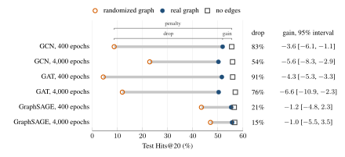

Dependence Is Not Advantage
What a graph-randomization drop measures
Many graphs that graph neural networks read are expensive to build: a predicted structure for every protein, a curated interaction network, a knowledge graph. To show that the graph is worth it, applied papers often randomize its edges, keeping every node's degree, and report how far the score drops.
The test comes from network science, where nothing is trained on the randomized copies. In a trained model the drop is the sum of two different things, and it takes one more run, the same model with no edges, to tell them apart.

A protein-interaction model
DeepGNHV predicts which human and virus proteins interact, reading a graph of each protein's residues built from its predicted structure. Its authors report that AUPRC falls by 16.1 points when the graph is randomized. When we retrain it, the residue-contact graph adds 1.4 points over self-loops on viruses unseen in training, and nothing consistent on viruses it has seen. On those seen viruses, scoring the trained model on a randomized graph without retraining costs 44.3 points, against 1.3 when the model is retrained: a different measurement that answers a different question.
Which comparison answers your question
| If you want to know | compare |
|---|---|
| whether the graph is worth building | the model with the graph against the best model without it |
| whether this model uses the graph | the same model trained with the real graph and with no edges: the gain |
| whether the wiring matters beyond the degrees | the real graph against a degree-preserving randomized graph: the drop |
| whether a trained model survives errors in its graph | the trained model, tested on a perturbed graph without retraining |
The penalty depends on the layer and on how long the model trains. Giving GCN or GAT a separate weight for each node's own features cut the penalty by 17 to 42 points in link prediction on Cora, CiteSeer and PubMed, and training ten times longer cut GCN's penalty on CiteSeer from 45 to 33 points. A drop compared across architectures or training budgets therefore says little about the graph.
Measure the gain for your model
graph-dependence trains a PyTorch Geometric model on the real graph, on
degree-preserving randomized graphs and with no edges, from the same initialization and with the
same learning-rate search, and reports the gain, the penalty and the drop with 95% intervals
paired by seed.
pip install graph-dependencefrom torch_geometric.datasets import Planetoid
from torch_geometric.nn import GCN
from graph_dependence import gain_penalty
def make_model(in_channels, out_channels):
return GCN(in_channels, 64, num_layers=2, out_channels=out_channels, dropout=0.5)
data = Planetoid("data", "Cora")[0]
report = gain_penalty(make_model, data, "node", seeds=5)
print(report)node classification, accuracy on a 0-100 scale, 5 seeds
learning rate chosen for each run on validation from (0.01, 0.001)
real graph no edges randomized
score 79.7 55.0 27.7
best epoch 12 319 45
epochs trained 1012 1319 1045
mean 95% interval
gain real - no edges +24.7 [+22.9, +26.4]
penalty no edges - randomized +27.3 [+24.5, +30.2]
drop real - randomized +52.0 [+48.5, +55.4]
The drop is 65% of the real-graph score. Across seeds the randomized-graph
scores range from 25.7 to 31.0.
Reading: the gain interval is above zero, so the graph helps this model. Gain is
47% of the drop and penalty is the rest.
If you train the model with your own code, randomize_edges draws the randomized
graphs and split_drop turns your scores into the same report. The
README covers
link prediction, test-time drops and how to read the report.
Cite
@misc{duggireddy2026dependence,
title = {Dependence Is Not Advantage: What a Graph-Randomization Drop Measures},
author = {Duggireddy, Prahas},
year = {2026},
note = {Preprint},
url = {https://www.alphaxiv.org/abs/2608.dependence-is-not-advantage}
}